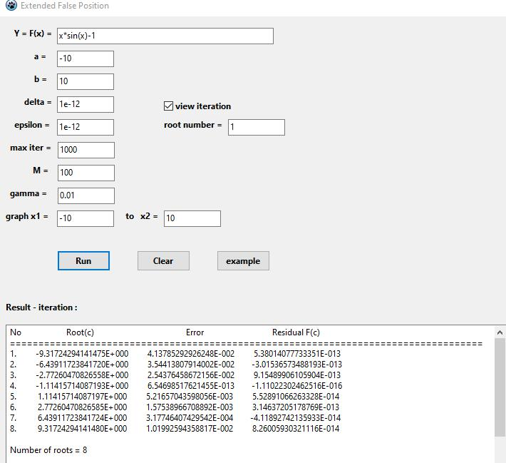
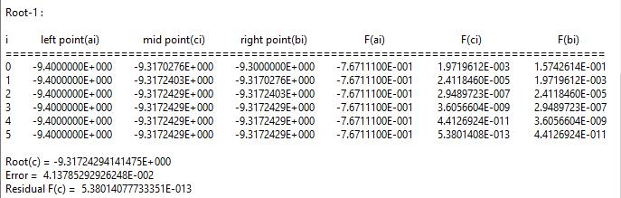
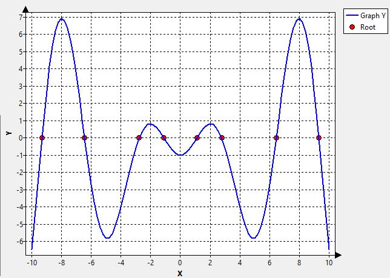

False Position
This is the solution of the Finding-roots problem, using False position method. In this win desktop app, the algorithm was extended from the False position method. So we can find all roots simultaneous.
False Position formula :
\[c_i=b_i-\frac { f(b_i)(b_i-a_i)} { f(b_i)-f(a_i) }\]
for i=1,2,3,....,n



File download (included source code in Lazarus) is : ExtendedFalsePositionScLazarus.rar at
Download here